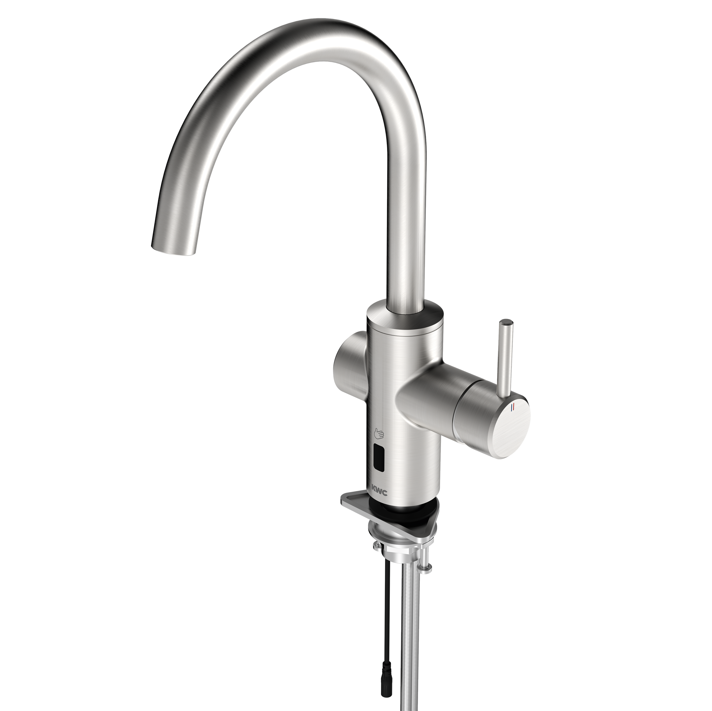

KWC Aquarotter GmbH
F5LME Hybrid-Küchenarmatur
F5LME001 - 2030061048
F5LME Hybrid-Küchenarmatur DN 15 als Standbatterie mit Schwenkauslauf, arretierbar in Mittelstellung. Einstellbare Schwenkbereiche 50°, 120° und 360°. Zum Anschluss an Warm- und Kaltwasser mittels Schläuchen mit Sieben. Einhebelmischer mit Mischkartusche mit Keramikscheibentechnik und einstellbarem, verdrehsicheren Temperaturanschlag. Alternative Betätigung mittels Handreflexion über opto-elektronischen Sensor zur zeitgesteuerten Wasserabgabe mit voreingestellter Mischwassertemperatur. Mischkartusche, Magnetventil und Sensor mit Steuerelektronik im Ganzmetallgehäuse, Edelstahl gebürstet.
Kontakt
Parkstraße 1-5 | 14974 Ludwigsfelde | Deutschland
Telefon +49 3378 818455 | kwc-info.de@kwc.com